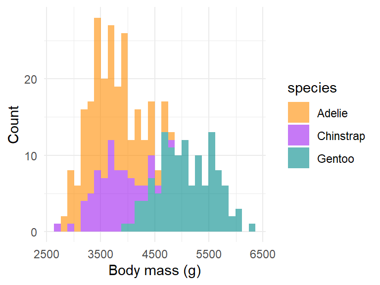
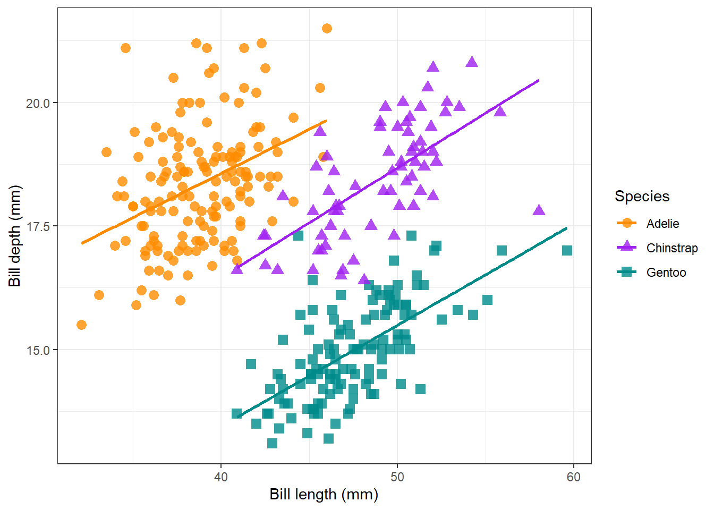

The penguins of Antarctica
1 Introduction
There are three main penguin species in Antarctica (Chinstrap, Gentoo, Adelie). You can see them in Figure 1:
In this paper we want to answer the following questions
- How bill depth depends on bill length?
- Which penguin species has the highest body mass?
2 Methods
All analysis was done using R version 4.1.3 (R Core Team 2022) and Quarto (Allaire 2022)
2.1 The data
The data was collected on islands in Antarctica and published by Gorman, Williams, and Fraser (2014). You can find the original paper with the title “Ecological sexual dimorphism and environmental variability within a community of Antarctic penguins (genus Pygoscelis)” (Gorman, Williams, and Fraser 2014) in PLoS ONE1
The data is published via the palmerpenguins R package (Horst, Hill, and Gorman 2020) which you can find on this website.
The data contains (among others) the following measurements:
- bill length
- bill depth
- body mass
- sex
- male
- female
2.2 The analysis
We did some plots, calculated some summary statistics and a linear model of the form \(y = ax + b + \epsilon\)
3 Results
The mean weight of all penguin species is 4201.754386 g. Gentoo penguins have an average weight of 5076 g, Adelie penguins of 3701 g and Chinstrap penguins of 3733 g.
Figure 2 below shows that Gentoo penguins have the highest body mass.

There is a positive relationship between bill length and bill depth for all 3 species, as Figure 3 shows.

In general, it looks like the body characteristics differ between the sexes but also between the penguin species, as Table 1 below illustrates:
| species | sex | bill_length | bill_depth | flipper_length | body_mass |
|---|---|---|---|---|---|
| Adelie | female | 37.25753 | 17.62192 | 187.7945 | 3368.836 |
| Adelie | male | 40.39041 | 19.07260 | 192.4110 | 4043.493 |
| Chinstrap | female | 46.57353 | 17.58824 | 191.7353 | 3527.206 |
| Chinstrap | male | 51.09412 | 19.25294 | 199.9118 | 3938.971 |
| Gentoo | female | 45.56379 | 14.23793 | 212.7069 | 4679.741 |
| Gentoo | male | 49.47377 | 15.71803 | 221.5410 | 5484.836 |
4 References
Allaire, JJ. 2022. “Quarto: R Interface to ’Quarto’ Markdown Publishing System.” https://CRAN.R-project.org/package=quarto.
Gorman, Kristen B., Tony D. Williams, and William R. Fraser. 2014. “Ecological Sexual Dimorphism and Environmental Variability Within a Community of Antarctic Penguins (Genus Pygoscelis).” Edited by André Chiaradia. PLoS ONE 9 (3): e90081. https://doi.org/10.1371/journal.pone.0090081.
Horst, Allison Marie, Alison Presmanes Hill, and Kristen B Gorman. 2020. Palmerpenguins: Palmer Archipelago (Antarctica) Penguin Data. https://doi.org/10.5281/zenodo.3960218.
R Core Team. 2022. R: A Language and Environment for Statistical Computing. Vienna, Austria: R Foundation for Statistical Computing. https://www.R-project.org/.